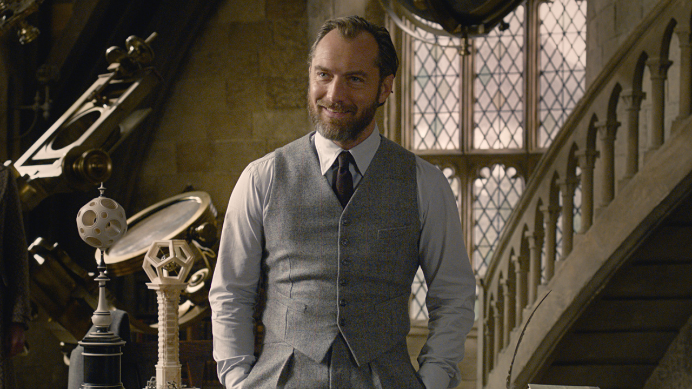
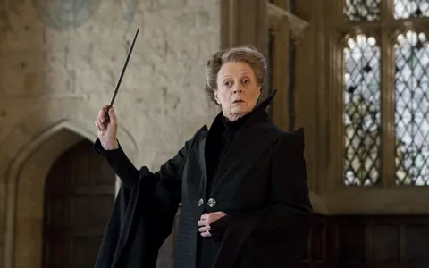

Альбус Дамблдор. Профессор трансфигурации, кавалер ордена Мерлина первой степени, Великий волшебник, Верховный чародей Визенгамота, Президент Международной конфедерации магов.

Минерва Макгонагалл. Декан Гриффиндора, преподаватель трансфигурации, впоследствии директор Хогвартса.